2.1 Cmake
CMake Practice（CMake 实践） -- Cjacker
为了阅读方便，本文档整理摘抄自互联网上的PDF版本，仅供学习参考使用。
前言
cmake 已经开发了 5、6 年的时间，如果没有 KDE4，也许不会有人或者 Linux 发行版本重视 cmake，因为除了 Kitware 似乎没有人使用它。通过 KDE4 的选型和开发，cmake 逐渐进入了人们的视线，在实际的使用过程中，cmake 的优势也逐渐的被大家所认识，至少 KDE 的开发者们给予了 cmake 极高的评价，同时庞大的 KDE 项目使用 cmake 来作为构建工具也证明了 cmake 的可用性和大项目管理能力。
所以，cmake 应该感谢 KDE，也正因为如此，cmake 的开发者投入了 KDE 从 autotools 到 cmake 的迁移过程中，并相当快速和顺利的完成了迁移，现在整个 KDE4 开发版本全部使用 cmake 构建。
这也是促使我们学习 cmake 的原因，首先 cmake 被接受并成功应用，其次，cmake 的优势在实际使用中不断的体现出来。
我们为什么不来认识一下这款优秀的工程构建工具呢？
在 2006 年 KDE 大会，听 cmake 开发者当面介绍了 cmake 之后，我就开始关注 cmake，并将 cmake 纳入了 Everest 发行版，作为系统默认组件。最近 QT-4.3 也正式进入了 Everest 系统，为 KDE4 构建完成了准备工作。
但是，在学习 cmake 的过程中，发现官方的文档非常的少，而且错误也较多，比如：在介绍 Find 模块编写的文档中，模块名称为 FOO，但是后面却出现了 Foo_FIND_QUIETLY 的定义，这显然是错误的，这样的定义永远不可能有效，正确的定义是 FOO_FIND_QUIETLY。种种原因，促使我开始写一份“面向使用和实用”的 cmake 文档，也就是本教程《cmake 实践》(Cmake Practice)。
本文档是边学习边编写的成果，更像是一个学习笔记和 Tutorial，因此难免有失误或者理解不够透彻的地方，比如，我仍然不能理解为什么绝大部分使用变量的情况要通过${}引用，而在 IF 语句中却必须直接使用变量名。也希望能够有 cmake 的高手来指点迷津。
补：从 cmake 的 maillist，我找到了一些答案，原文是：
The
IF(var)orIF(NOT var)command expects var to be the name of a variable. This is stated in CMake's manual. So, for your situationIF(${libX})is the same asIF(/usr/lib/xorg)and then CMake will check the value of the variable named/usr/lib/xorg.
也就是说 IF 需要的是变量名而不是变量值。
这个文档是开放的，开放的目的是为了让更多的人能够读到并且能够修改，任何人都可以对它作出修改和补充，但是，为了大家都能够获得你关于 cmake 的经验和积累，如果你发现错误或者添加了新内容后，请务必 CC 给我一份，让我们共同把 cmake 掌握的更好。
一、初识 cmake
CMake 不再使你在构建项目时郁闷地想自杀了。 --一位 KDE 开发者
1. 背景知识
cmake 是 kitware 公司以及一些开源开发者在开发几个工具套件(VTK)的过程中的衍生品，最终形成体系，成为一个独立的开放源代码的项目。项目的诞生时间是 2001 年。其官方网站是 www.cmake.org，可以通过访问官方网站获得更多关于 cmake 的信息。cmake 的流行其实要归功于 KDE4 的开发(似乎跟当年的 svn 一样，KDE 将代码仓库从 CVS 迁移到 SVN，同时证明了 SVN 管理大型项目的可用性)，在 KDE 开发者使用了近 10 年 autotools 之后，他们终于决定为 KDE4 选择一个新的工程构建工具，其根本原因用 KDE 开发者的话来说就是：只有少数几个“编译专家”能够掌握 KDE 现在的构建体系(admin/Makefile.common)。在经历了 unsermake， scons 以及 cmake 的选型和尝试之后，KDE4 决定使用 cmake 作为自己的构建系统。在迁移过程中，进展异常的顺利，并获得了 cmake 开发者的支持。所以，目前的 KDE4 开发版本已经完全使用 cmake 来进行构建。像 kdesvn，rosegarden 等项目也开始使用cmake，这也注定了 cmake 必然会成为一个主流的构建体系。
2. 特点
cmake 的特点主要有：
- 开放源代码，使用类 BSD 许可发布 http://cmake.org/HTML/Copyright.html
- 跨平台，并可生成 native 编译配置文件，在 Linux/Unix 平台，生成 makefile；在苹果平台，可以生成 xcode；在 Windows 平台，可以生成 MSVC 的工程文件。
- 能够管理大型项目，KDE4 就是最好的证明。
- 简化编译构建过程和编译过程。Cmake 的工具链非常简单：cmake+make。
- 高效虑，按照 KDE 官方说法，CMake 构建 KDE4 的 kdelibs 要比使用 autotools 来构建 KDE3.5.6 的 kdelibs 快 40%，主要是因为 Cmake 在工具链中没有 libtool。
- 可扩展，可以为 cmake 编写特定功能的模块，扩充 cmake 功能。
3. 问题，难道就没有问题？
- cmake 很简单，但绝对没有听起来或者想象中那么简单。
- cmake 编写的过程实际上是编程的过程，跟以前使用 autotools 一样，不过你需要编写的是
CMakeLists.txt(每个目录一个)，使用的是”cmake 语言和语法”。 - cmake 跟已有体系的配合并不是特别理想，比如 pkgconfig，您在实际使用中会有所体会，虽然有一些扩展可以使用，但并不理想。
4. 个人的建议
- 如果你没有实际的项目需求，那么看到这里就可以停下来了，因为 cmake 的学习过程就是实践过程，没有实践，读的再多几天后也会忘记。
- 如果你的工程只有几个文件，直接编写 Makefile 是最好的选择。
- 如果使用的是 C/C++/Java 之外的语言，请不要使用 cmake(至少目前是这样)。
- 如果你使用的语言有非常完备的构建体系，比如 java 的 ant，也不需要学习 cmake，虽然有成功的例子，比如 QT4.3 的 csharp 绑定 qyoto。
- 如果项目已经采用了非常完备的工程管理工具，并且不存在维护问题，没有必要迁移到 cmake 。
- 如果仅仅使用 qt 编程，没有必要使用 cmake，因为 qmake 管理 Qt 工程的专业性和自动化程度比 cmake 要高很多。
二、安装 cmake
还需要安装吗？
cmake 目前已经成为各大 Linux 发行版提供的组件，比如 Everest 直接在系统中包含，Fedora 在 extra 仓库中提供，所以，需要自己动手安装的可能性很小。如果你使用的操作系统(比如 Windows 或者某些 Linux 版本)没有提供 cmake 或者包含的版本较旧，建议你直接从 cmake 官方网站下载安装。
http://www.cmake.org/HTML/Download.html
在这个页面，提供了源代码的下载以及针对各种不同操作系统的二进制下载，可以选择适合自己操作系统的版本下载安装。因为各个系统的安装方式和包管理格式有所不同，在此就不再赘述了，相信一定能够顺利安装 cmake。
三、初试 cmake — cmake 的 helloworld
Hello world，世界 你好
本节选择了一个最简单的例子 Helloworld 来演练一下 cmake 的完整构建过程，本节并不会深入的探讨 cmake，仅仅展示一个简单的例子，并加以粗略的解释。我们选择了 Everest Linux 作为基本开发平台，因为这个只有一张 CD 的发行版本，包含了 gcc4.2/gtk/qt3/qt4等完整的开发环境，同时，系统默认集成了 cmake 最新版本 2.4.6。
[info] 备注：
此处使用 Ubuntu 操作亦可
1. 准备工作
首先，在家目录下新建 /backup 目录， 在 /backup 目录下建立一个 cmake 目录，用来放置我们学习过程中的所有练习。
cd ~
mkdir -p /backup/cmake
以后我们所有的 cmake 练习都会放在 /backup/cmake 的子目录下(你也可以自行安排目录，这个并不是限制，仅仅是为了叙述的方便)。
然后在 cmake 建立第一个练习目录 t1：
cd /backup/cmake
mkdir t1
cd t1
在 t1 目录建立 main.c 和 CMakeLists.txt(注意文件名大小写)：
main.c 文件内容：
// main.c
#include <stdio.h>
int main()
{
printf("Hello World from t1 Main!\n");
return 0;
}
CmakeLists.txt 文件内容：
PROJECT(HELLO)
SET(SRC_LIST main.c)
MESSAGE(STATUS "This is BINARY dir " ${HELLO_BINARY_DIR})
MESSAGE(STATUS "This is SOURCE dir " ${HELLO_SOURCE_DIR})
ADD_EXECUTABLE(hello ${SRC_LIST})
2. 开始构建
所有的文件创建完成后，t1 目录中应该存在 main.c 和 CMakeLists.txt 两个文件。接下来我们来构建这个工程，在这个目录中点击右键，打开终端，在终端中输入：cmake . (注意命令后面的点号，代表本目录)。
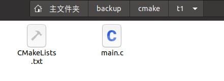
输出大概是这个样子：
-- The C compiler identification is GNU 9.4.0
-- The CXX compiler identification is GNU 9.4.0
-- Check for working C compiler: /usr/bin/cc
-- Check for working C compiler: /usr/bin/cc -- works
-- Detecting C compiler ABI info
-- Detecting C compiler ABI info - done
-- Detecting C compile features
-- Detecting C compile features - done
-- Check for working CXX compiler: /usr/bin/c++
-- Check for working CXX compiler: /usr/bin/c++ -- works
-- Detecting CXX compiler ABI info
-- Detecting CXX compiler ABI info - done
-- Detecting CXX compile features
-- Detecting CXX compile features - done
-- This a BINARY dir /home/qlf/backup/cmake/t1
-- This a SOURCE dir /home/qlf/backup/cmake/t1
-- Configuring done
-- Generating done
-- Build files have been written to: /home/qlf/backup/cmake/t1
再让我们看一下目录中的内容，你会发现，系统自动生成了：
CMakeFiles，CMakeCache.txt，cmake_install.cmake 等文件，并且生成了 Makefile。
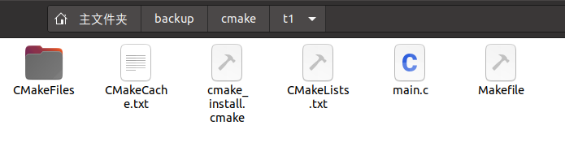
然后进行工程的实际构建，继续在终端中输入 make 命令，大概会得到如下的彩色输出：
Scanning dependencies of target hello
[ 50%] Building C object CMakeFiles/hello.dir/main.c.o
[100%] Linking C executable hello
[100%] Built target hello
如果你需要看到 make 构建的详细过程，可以使用 make VERBOSE=1 或者 VERBOSE=1 make 命令来进行构建。
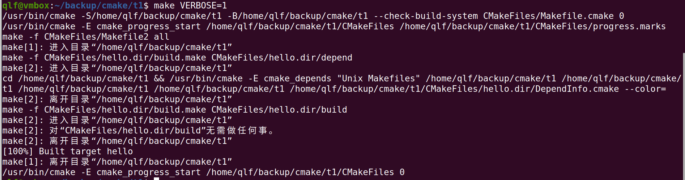
这时候，我们需要的目标文件 hello 已经构建完成，位于当前目录，尝试在终端中输入：
./hello
得到输出：
Hello World from t1 Main!
恭喜您，到这里为止您已经完全掌握了 cmake 的使用方法。
3. 简单的解释
我们来重新看一下 CMakeLists.txt，这个文件是 cmake 的构建定义文件，文件名是大小写相关的，如果工程存在多个目录，需要确保每个要管理的目录都存在一个 CMakeLists.txt。(关于多目录构建，后面我们会提到，这里不作过多解释)。
上面例子中的 CMakeLists.txt 文件内容如下：
PROJECT (HELLO)
SET(SRC_LIST main.c)
MESSAGE(STATUS "This is BINARY dir " ${HELLO_BINARY_DIR})
MESSAGE(STATUS "This is SOURCE dir " ${HELLO_SOURCE_DIR})
ADD_EXECUTABLE(hello ${SRC_LIST})
PROJECT 指令的语法是：
PROJECT(projectname [CXX] [C] [Java])
你可以用这个指令定义工程名称，并可指定工程支持的语言，支持的语言列表是可以忽略的，默认情况表示支持所有语言。这个指令隐式的定义了两个 cmake 变量：
<projectname>_BINARY_DIR 以及 <projectname>_SOURCE_DIR，这里就是 HELLO_BINARY_DIR 和 HELLO_SOURCE_DIR (所以 CMakeLists.txt 中两个 MESSAGE 指令可以直接使用了这两个变量)，因为采用的是内部编译，两个变量目前指的都是工程所在路径/backup/cmake/t1，后面我们会讲到外部编译，两者所指代的内容会有所不同。
同时 cmake 系统也帮助我们预定义了 PROJECT_BINARY_DIR 和 PROJECT_SOURCE_DIR 变量，他们的值分别跟 HELLO_BINARY_DIR 与 HELLO_SOURCE_DIR 一致。
为了统一起见，建议以后直接使用PROJECT_BINARY_DIR和PROJECT_SOURCE_DIR，即使修改了工程名称，也不会影响这两个变量。如果使用了<projectname_SOURCE_DIR>，修改工程名称后，需要同时修改这些变量。
SET指令的语法是：
SET(VAR [VALUE] [CACHE TYPE DOCSTRING [FORCE]])
现阶段，你只需要了解 SET 指令可以用来显式的定义变量即可。比如我们用到的是SET(SRC_LIST main.c)，如果有多个源文件，也可以定义成：SET(SRC_LIST main.c t1.c t2.c)。
MESSAGE语法的指令是：
MESSAGE([SEND_ERROR | STATUS | FATAL_ERROR] "message to display" ...)
这个指令用于向终端输出用户定义的信息，包含了三种类型：
SEND_ERROR，产生错误，生成过程被跳过STATUS，输出前缀为--的信息FATAL_ERROR，立即终止所有cmake过程
我们在这里使用的是 STATUS 信息输出，演示了由 PROJECT 指令定义的两个隐式变量 HELLO_BINARY_DIR 和 HELLO_SOURCE_DIR。
ADD_EXECUTABLE(hello ${SRC_LIST})
定义了这个工程会生成一个文件名为 hello 的可执行文件，相关的源文件是 SRC_LIST 中定义的源文件列表， 本例中你也可以直接写成ADD_EXECUTABLE(hello main.c)。
在本例我们使用了${}来引用变量，这是 cmake 的变量引用方式。但是，有一些例外，比如在 IF 控制语句，变量是直接使用变量名引用，而不需要${}。如果使用了${}去应用变量，其实 IF 会去判断名为${}所代表的值的变量，那当然是不存在的了。
将本例改写成一个最简化的CMakeLists.txt：
PROJECT(HELLO)
ADD_EXECUTABLE(hello main.c)
4. 基本语法规则
前面提到过，cmake 其实仍然要使用”cmake 语言和语法”去构建，上面的内容就是所谓的 ”cmake 语言和语法”，最简单的语法规则是：
变量使用
${}方式取值，但是在IF 控制语句中是直接使用变量名。指令(参数1 参数2...)
参数使用括弧括起，参数之间使用空格或分号分开。
以上面的
ADD_EXECUTABLE指令为例，如果存在另外一个 func.c 源文件，就要写成：ADD_EXECUTABLE(hello main.c func.c)或者
ADD_EXECUTABLE(hello main.c;func.c)
指令是大小写无关的，参数和变量是大小写相关的。但，推荐你全部使用大写指令。
上面的 MESSAGE 指令已经用到了这条规则：
MESSAGE(STATUS “This is BINARY dir” ${HELLO_BINARY_DIR})
也可以写成：
MESSAGE(STATUS “This is BINARY dir ${HELLO_BINARY_DIR}”)
这里需要特别解释的是作为工程名 HELLO 和生成的可执行文件 hello 是没有任何关系的。hello 定义的可执行文件的文件名，你完全可以写成：
ADD_EXTCUTABLE(t1 main.c)，编译后会生成一个 t1 可执行文件。
5. 关于语法的疑惑
cmake 的语法还是比较灵活而且考虑到各种情况，比如 SET(SRC_LIST main.c) 也可以写成 SET(SRC_LIST "main.c") 是没有区别的，但是假设一个源文件的文件名是 fu nc.c(文件名中间包含了空格)。 这时候就必须使用双引号，如果写成了SET(SRC_LIST fu nc.c)，就会出现错误，提示你找不到 fu 文件和 nc.c 文件。这种情况，就必须写成：SET(SRC_LIST "fu nc.c")。
此外，你可以可以忽略掉 source 列表中的源文件后缀，比如可以写成 ADD_EXECUTABLE(t1 main)，cmake 会自动的在本目录查找 main.c 或者 main.cpp 等，当然，最好不要偷这个懒，以免这个目录确实存在一个 main.c 一个 main。
同时参数也可以使用分号来进行分割。
下面的例子也是合法的：
ADD_EXECUTABLE(t1 main.c t1.c) 可以写成 ADD_EXECUTABLE(t1 main.c;t1.c)。
我们只需要在编写 CMakeLists.txt 时注意形成统一的风格即可。
6. 清理工程
跟经典的 autotools 系列工具一样，运行：
make clean
即可对构建结果进行清理。
7. 问题？问题！
“我尝试运行了 make distclean，这个指令一般用来清理构建过程中产生的中间文件的，如果要发布代码，必然要清理掉所有的中间文件，但是为什么在 cmake 工程中这个命令是无效的?”
是的，cmake 并不支持 make distclean，关于这一点，官方是有明确解释的：
因为
CMakeLists.txt可以执行脚本并通过脚本生成一些临时文件，但是却没有办法来跟踪这些临时文件到底是哪些。因此，没有办法提供一个可靠的 make distclean 方案。Some build trees created with GNU autotools have a "make distclean" target that cleans the build and also removes Makefiles and other parts of the generated build system. CMake does not generate a "make distclean" target because
CMakeLists.txtfiles can run scripts and arbitrary commands; CMake has no way of tracking exactly which files are generated as part of running CMake. Providing a distclean target would give users the false impression that it would work as expected. (CMake does generate a "make clean" target to remove files generated by the compiler and linker.)A "make distclean" target is only necessary if the user performs an in-source build. CMake supports in-source builds, but we strongly encourage users to adopt the notion of an out-of-source build. Using a build tree that is separate from the source tree will prevent CMake from generating any files in the source tree. Because CMake does not change the source tree, there is no need for a distclean target. One can start a fresh build by deleting the build tree or creating a separate build tree.
同时，还有另外一个非常重要的提示，就是：我们刚才进行的是内部构建(in-source build)，而 cmake 强烈推荐的是外部构建(out-of-source build)。
8. 内部构建与外部构建
上面的例子展示的是“内部构建”，相信看到生成的临时文件比您的代码文件还要多的时候，估计这辈子你都不希望再使用内部构建 :-D
举个简单的例子来说明外部构建，以编译 wxGTK 动态库和静态库为例，在 Everest 中打包方式是这样的：
解开 wxGTK 后，
在其中建立 static 和 shared 目录，
进入 static 目录，运行 ../configure –enable-static;make 会在 static 目录生成 wxGTK 的静态库，
进入 shared 目录，运行 ../configure –enable-shared;make 就会在 shared 目录生成动态库。
这就是外部编译的一个简单例子。
对于 cmake ，内部编译上面已经演示过了，它生成了一些无法自动删除的中间文件，所以，引出了我们对外部编译的探讨，外部编译的过程如下：
- 首先请清除
t1 目录中除main.c、CMakeLists.txt之外的所有中间文件，最关键的是CMakeCache.txt。 在 t1 目录中建立
build 目录，当然你也可以在任何地方建立 build 目录，不一定必须在工程目录中。 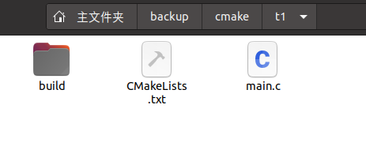进入
build 目录，在终端中执行cmake ..（注意，..代表父目录，因为父目录存在我们需要的CMakeLists.txt，如果你在其他地方建立了 build 目录，需要运行cmake <工程的全路径>），查看一下 build 目录，就会发现生成了编译需要的 Makefile 以及其他的中间文件。- 继续在终端中运行
make构建工程，就会在当前目录（build 目录）中获得目标文件 hello。 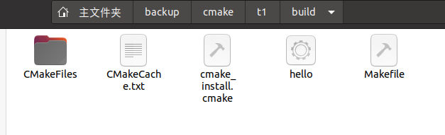
上述过程就是所谓的 out-of-source 外部编译，一个最大的好处是，对于原有的工程没有任何影响，所有动作全部发生在编译目录。通过这一点，也足以说服我们全部采用外部编译方式构建工程。
这里需要特别注意的是：
通过外部编译进行工程构建，HELLO_SOURCE_DIR仍然指代工程目录，即/backup/cmake/t1，而HELLO_BINARY_DIR则指代编译路径，即/backup/cmake/t1/build。
9. 小结
本小结描述了使用 cmake 构建 Hello World 程序全部过程，并介绍了三个简单的指令：PROJECT/MESSAGE/ADD_EXECUTABLE 以及变量调用的方法，同时提及了两个隐式变量 <projectname>_SOURCE_DIR 及<projectname>_BINARY_DIR，演示了变量调用的方法。从这个过程来看，有些开发者可能会想，这实在比我写 Makefile 要复杂多了，甚至我都可以不编写 Makefile，直接使用gcc main.c即可生成需要的目标文件。是的，正如第一节提到的，如果工程只有几个文件，还是直接编写 Makefile 最简单。但是，kdelibs 压缩包达到 50M，您认为使用什么方案更容易一点呢？
下一节，我们的任务是让 Hello World 看起来更像一个工程。
四、更好一点的 Hello world
没有最好，只有更好
从本小节开始，后面所有的构建我们都将采用 out-of-source 外部构建，约定的构建目录是工程目录下的 build 自录。
本小节的任务是让前面的 Hello World 更像一个工程，我们需要做的是：
- 为工程添加一个
子目录 src，用来放置工程源代码 - 添加一个
子目录 doc，用来放置这个工程的文档hello.txt - 在工程目录添加文本文件
COPYRIGHT，README - 在工程目录添加一个
runhello.sh脚本，用来调用 hello 二进制 - 将构建后的目标文件放入构建目录的
bin 子目录 - 最终安装这些文件：将
hello二进制与runhello.sh安装至/<prefix>/bin，将doc 目录下的内容以及COPYRIGHT、README安装到/<prefix>/usr/share/doc/cmake/t2备注：
<prefix>表示预定义的路径
1. 准备工作
在~/backup/cmake/目录下建立 t2 目录。
将 t1 工程的 main.c 和 CMakeLists.txt 拷贝到 t2 目录中。
2. 添加子目录src
在t2目录中，打开终端，执行：
mkdir src
mv main.c src
现在的工程看起来是这个样子：
一个子目录 src，一个 CMakeLists.txt。 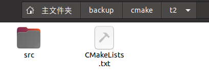
上一节我们提到，需要为任何子目录建立一个 CMakeLists.txt，进入子目录 src，编写 CMakeLists.txt 如下：
ADD_EXECUTABLE(hello main.c)
将 t2 目录下的 CMakeLists.txt 修改为：
PROJECT(HELLO)
ADD_SUBDIRECTORY(src bin)
然后建立 build 目录，进入 build 目录进行外部编译：
cmake ..
make
编译过程中可能会出现No cmake_minimum_required command is present.的警告，这个不影响项目构建，忽略即可。
构建完成后，你会发现生成的目标文件 hello 位于 build/bin 目录中。
语法解释：
ADD_SUBDIRECTORY 指令
ADD_SUBDIRECTORY(source_dir [binary_dir] [EXCLUDE_FROM_ALL])
这个指令用于向当前工程添加存放源文件的子目录，并可以指定中间二进制和目标二进制存放的位置。EXCLUDE_FROM_ALL 参数的含义是将这个目录从编译过程中排除。比如，工程的 example，可能就需要工程构建完成后，再进入 example 目录单独进行构建(当然，你也可以通过定义依赖来解决此类问题)。
上面的例子定义了将 src 子目录加入工程，并指定编译输出(包含编译中间结果)路径为 bin 目录。如果不进行 bin 目录的指定，那么编译结果(包括中间结果)都将存放在 build/src 目录(这个目录跟原有的 src 目录对应)，指定 bin 目录后，相当于在编译时将 src 重命名为 bin，所有的中间结果和目标二进制都将存放在 bin 目录。
这里需要提一下的是 SUBDIRS 指令，使用方法是：
SUBDIRS(dir1 dir2...)，但是这个指令已经不推荐使用。它可以一次添加多个子目录，并且，即使外部编译，子目录体系仍然会被保存。
如果我们在上面的例子中将 ADD_SUBDIRECTORY (src bin) 修改为 SUBDIRS(src)，那么在 build 目录中将出现一个 src 目录，生成的目标代码 hello 将存放在 src 目录中。
3. 换个地方保存目标二进制
不论是 SUBDIRS 还是 ADD_SUBDIRECTORY 指令(不论是否指定编译输出目录)，我们都可以通过 SET 指令重新定义 EXECUTABLE_OUTPUT_PATH 和 LIBRARY_OUTPUT_PATH 变量来指定最终的目标二进制的位置（指最终生成的 hello 或者最终的共享库，不包含编译生成的中间文件）。
SET(EXECUTABLE_OUTPUT_PATH ${PROJECT_BINARY_DIR}/bin)
SET(LIBRARY_OUTPUT_PATH ${PROJECT_BINARY_DIR}/lib)
在第一节我们提到了 <projectname>_BINARY_DIR 和 PROJECT_BINARY_DIR 变量，它们指的是编译发生的当前目录。如果是内部编译，就相当于 PROJECT_SOURCE_DIR 也就是工程代码所在目录；如果是外部编译，指的是外部编译所在目录，也就是本例中的 build 目录。
所以，上面两个指令分别定义了：
可执行二进制的输出路径为 build/bin 和库的输出路径为 build/lib。
本节我们没有提到共享库和静态库的构建，所以，你可以不考虑第二条指令。
问题是，我应该把这两条指令写在t2 工程的 CMakeLists.txt 还是 src 目录下的 CMakeLists.txt。把握一个简单的原则，在哪里 ADD_EXECUTABLE 或 ADD_LIBRARY，如果需要改变目标存放路径，就在哪里加入上述的定义。
在这个例子里，当然就是指 src 下的 CMakeLists.txt 了。
4. 如何安装
安装的需要有两种，一种是从代码编译后直接 make install 安装，一种是打包时的指定目录安装。
所以，即使最简单的手工编写的 Makefile，看起来也是这个样子的：
DESTDIR=
install:
mkdir -p $(DESTDIR)/usr/bin
install -m 755 hello $(DESTDIR)/usr/bin
你可以通过：make install 将 hello 直接安装到 /usr/bin 目录，也可以通过 make install DESTDIR=/tmp/test 将它安装在 /tmp/test/usr/bin 目录，打包时这个方式经常被使用。
稍微复杂一点的是还需要定义 PREFIX，一般 autotools 工程，会运行这样的指令：
./configure --prefix=/usr 或者 ./configure --prefix=/usr/local 来指定 PREFIX
比如上面的 Makefile 就可以改写成：
DESTDIR=
PREFIX=/usr
install:
mkdir -p $(DESTDIR)/$(PREFIX)/bin
install -m 755 hello $(DESTDIR)/$(PREFIX)/bin
那么我们的 HelloWorld 应该怎么进行安装呢？
这里需要引入一个新的 cmake 指令 INSTALL 和一个非常有用的变量 CMAKE_INSTALL_PREFIX。
CMAKE_INSTALL_PREFIX 变量类似于 configure 脚本的 --prefix，常见的使用方法看起来是这个样子：cmake -DCMAKE_INSTALL_PREFIX=/usr。
INSTALL 指令用于定义安装规则，安装的内容可以包括目标二进制、动态库、静态库以及文件、目录、脚本等。
INSTALL 指令包含了各种安装类型，我们需要一个个分开解释：
1. 目标文件的安装：
INSTALL(TARGETS targets...
[
[ARCHIVE|LIBRARY|RUNTIME]
[DESTINATION <dir>]
[PERMISSIONS permissions...]
[
CONFIGURATIONS [Debug|Release|...]
]
[COMPONENT <component>]
[OPTIONAL]
] [...])
参数中的 TARGETS 后面跟的就是我们通过 ADD_EXECUTABLE 或者 ADD_LIBRARY 定义的目标文件，可能是可执行二进制、动态库、静态库。
目标类型也就相对应的有三种，ARCHIVE 特指静态库，LIBRARY 特指动态库，RUNTIME 特指可执行目标二进制。
DESTINATION 定义了安装的路径，如果路径以/开头，即使用绝对路径，这时候 CMAKE_INSTALL_PREFIX 其实就无效了。如果你希望使用 CMAKE_INSTALL_PREFIX 来定义安装路径，就要写成相对路径，即不要以 /开头，那么安装后的路径就是 ${CMAKE_INSTALL_PREFIX}/<DESTINATION 定义的路径>。
举个简单的例子：
INSTALL(TARGETS myrun mylib mystaticlib
RUNTIME DESTINATION bin
LIBRARY DESTINATION lib
ARCHIVE DESTINATION libstatic
)
上面的例子会将：
- 可执行目标二进制 myrun 安装到
${CMAKE_INSTALL_PREFIX}/bin目录 - 动态库 mylib 安装到
${CMAKE_INSTALL_PREFIX}/lib目录 - 静态库 mystaticlib 安装到
${CMAKE_INSTALL_PREFIX}/libstatic目录
特别注意的是你不需要关心 TARGETS 具体生成的路径，只需要写上 TARGETS 名称就可以了。
2. 普通文件的安装：
INSTALL(FILES files... DESTINATION <dir>
[PERMISSIONS permissions...]
[CONFIGURATIONS [Debug|Release|...]]
[COMPONENT <component>]
[RENAME <name>] [OPTIONAL]
)
可用于安装一般文件，并可以指定访问权限，文件名是此指令所在路径下的相对路径。如果默认不定义权限 PERMISSIONS，安装后的权限为：
OWNER_WRITE, OWNER_READ, GROUP_READ,和 WORLD_READ，即 644 权限。
非目标文件的可执行程序安装(比如脚本之类)：
INSTALL(PROGRAMS files... DESTINATION <dir>
[PERMISSIONS permissions...]
[CONFIGURATIONS [Debug|Release|...]]
[COMPONENT <component>]
[RENAME <name>] [OPTIONAL]
)
跟上面的 “普通文件安装” 指令使用方法一样，唯一的不同是安装后权限为：
OWNER_EXECUTE, GROUP_EXECUTE, 和 WORLD_EXECUTE，即 755 权限。
3. 目录的安装：
INSTALL(DIRECTORY dirs... DESTINATION <dir>
[FILE_PERMISSIONS permissions...]
[DIRECTORY_PERMISSIONS permissions...]
[USE_SOURCE_PERMISSIONS]
[CONFIGURATIONS [Debug|Release|...]]
[COMPONENT <component>]
[[PATTERN <pattern> | REGEX <regex>]
[EXCLUDE] [PERMISSIONS permissions...]] [...]
)
这里主要介绍其中的 DIRECTORY、PATTERN 以及 PERMISSIONS 参数。
DIRECTORY 后面连接的是所在 Source 目录的相对路径，但务必注意：abc 和 abc/有很大的区别。
如果目录名不以 / 结尾，那么这个目录将被安装为目标路径下的 abc，如果目录名以 / 结尾，代表将这个目录中的内容安装到目标路径，但不包括这个目录本身。
PATTERN 用于使用正则表达式进行过滤，PERMISSIONS 用于指定 PATTERN 过滤后的文件权限。
我们来看一个例子：
INSTALL(DIRECTORY icons scripts/ DESTINATION share/myproj
PATTERN "CVS" EXCLUDE
PATTERN "scripts/*"
PERMISSIONS OWNER_EXECUTE OWNER_WRITE OWNER_READ
GROUP_EXECUTE GROUP_READ
)
这条指令的执行结果是：
将 icons 目录安装到 /share/myproj，将 scripts/中的内容安装到 /share/myproj
不包含目录名为 CVS 的目录，对于 scripts/* 文件指定权限为 OWNER_EXECUTE OWNER_WRITE OWNER_READ GROUP_EXECUTE GROUP_READ。
安装时 Cmake 脚本的执行：
INSTALL([[SCRIPT ] [CODE ]] [...])
SCRIPT 参数用于在安装时调用 cmake 脚本文件（也就是 .cmake 文件）
CODE 参数用于执行 CMAKE 指令，必须以双引号括起来。比如：
INSTALL(CODE "MESSAGE(\"Sample install message.\")")
安装还有几个被标记为过时的指令，比如 INSTALL_FILES 等，这些指令已经不再推荐使用，所以，这里就不再赘述了。
下面，我们就来改写我们的工程文件，让它来支持各种文件的安装，并且，我们要使用 CMAKE_INSTALL_PREFIX指令。
5. 修改 Helloworld 支持安装
在本节开头我们定义了本节的任务如下：
- 为工程添加一个
子目录 src，用来放置工程源代码 - 添加一个
子目录 doc，用来放置这个工程的文档hello.txt - 在工程目录添加文本文件
COPYRIGHT，README - 在工程目录添加一个
runhello.sh脚本，用来调用 hello 二进制 - 将构建后的目标文件放入构建目录的
bin 子目录 - 最终安装这些文件：将
hello二进制与runhello.sh安装至/<prefix>/bin，将doc 目录下的内容以及COPYRIGHT、README安装到/<prefix>/share/doc/cmake/t2
首先我们先补上未添加的文件：
添加 doc 目录及文件
cd ~/backup/cmake/t2
mkdir doc
sudo gedit doc/hello.txt #hello.txt中填写：这是 Cmake 练习工程 Helloworld 的 doc 说明文档
在t2工程目录中使用touch runhello.sh命令创建 runhello.sh 脚本，脚本文件中填写：
./hello
在t2工程目录中添加 COPYRIGHT 和 README文件：
cd ~/backup/cmake/t2
touch COPYRIGHT
touch README
下面改写各目录的 CMakeLists.txt：
安装 COPYRIGHT/README，修改
t2工程目录中 CMakelists.txt，加入以下指令：INSTALL(FILES COPYRIGHT README DESTINATION share/doc/cmake/t2)安装 runhello.sh，修改
t2工程目录中 CMakeLists.txt，加入如下指令：INSTALL(PROGRAMS runhello.sh DESTINATION bin)安装 doc 中的 hello.txt，这里有两种方式：一是通过在 doc 目录建立 CMakeLists.txt 并将 doc 目录通过 ADD_SUBDIRECTORY 加入工程来完成。另一种方法是直接在工程目录通过
INSTALL(DIRECTORY)来完成。前者比较简单，各位可以根据兴趣自己完成，我们来尝试后者，顺便演示以下 DIRECTORY 的安装。因为 hello.txt 要安装到
/<prefix>/share/doc/cmake/t2，所以我们不能直接安装整个 doc 目录，这里采用的方式是安装 doc 目录中的内容，也就是使用doc/。在
t2工程目录中 CMakeLists.txt 中添加：INSTALL(DIRECTORY doc/ DESTINATION share/doc/cmake/t2)@Gavin注：在
src目录的CMakeLists.txt文件中添加如下内容，以安装 hello 到/<prefix>/bin中：INSTALL(TARGETS hello RUNTIME DESTINATION bin)
6. 尝试我们修改的结果
现在进入 build 目录进行外部编译，注意使用 CMAKE_INSTALL_PREFIX 参数，这里我们将它安装到了/tmp/t2/usr目录：
cmake -DCMAKE_INSTALL_PREFIX=/tmp/t2/usr ..
然后继续在终端运行：
make
make install
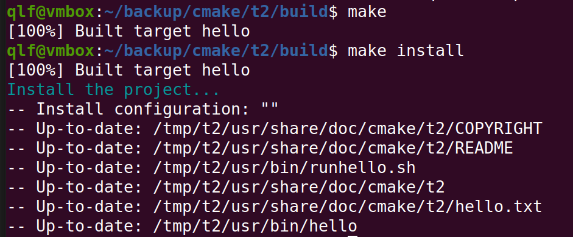
让我们进入/tmp/t2/usr目录，看一下安装结果：
./usr
./usr/share
./usr/share/doc
./usr/share/doc/cmake
./usr/share/doc/cmake/t2
./usr/share/doc/cmake/t2/hello.txt
./usr/share/doc/cmake/t2/README
./usr/share/doc/cmake/t2/COPYRIGHT
./usr/bin
./usr/bin/hello
./usr/bin/runhello.sh
如果你要直接安装到系统，可以使用如下指令：
cmake -DCMAKE_INSTALL_PREFIX=/usr ..
7. 一个疑问
如果我没有定义 CMAKE_INSTALL_PREFIX 会安装到什么地方？
你可以尝试一下，在 build 目录中打开终端，并执行
cmake ..
make
make install
你会发现 CMAKE_INSTALL_PREFIX 的默认定义是 /usr/local。
8. 小结
本小节主要描述了如何在工程中使用多目录、各种安装指令以及 CMAKE_INSTALL_PREFIX 变量(你真够牛的，这么点东西居然罗唆了这么多文字)。
在下一小节，我们将探讨如何在 cmake 中构建动态库和静态库，以及如何使用外部头文件和外部共享库.毕竟，这是程序编写中最常使用的（对了，你知道用怎样的 gcc 参数可以直接构建静态库和动态库吗？）
五、静态库与动态库构建
读者云，太能罗唆了，一个 Hello World 就折腾了两个大节。OK，从本节开始，我们不再折腾 Hello World 了，我们来折腾 Hello World 的共享库。
本节的任务：
- 建立一个静态库和动态库，提供
HelloFunc 函数供其他程序编程使用，HelloFunc 向终端输出 Hello World 字符串。 - 安装头文件与共享库。
1. 准备工作
在 /backup/cmake 目录建立 t3 目录，用于存放本节涉及到的工程。
2. 建立共享库
cd /backup/cmake/t3
mkdir lib
在 t3 目录下建立 CMakeLists.txt，内容如下：
PROJECT(HELLOLIB)
ADD_SUBDIRECTORY(lib)
在 lib 目录下建立两个源文件 hello.c 与 hello.h
hello.c 内容如下：
#include "hello.h"
void HelloFunc()
{
printf("Hello World\n");
}
hello.h 内容如下：
#ifndef HELLO_H
#define HELLO_H
#include <stdio.h>
void HelloFunc();
#endif
在 lib 目录下建立 CMakeLists.txt，内容如下：
SET(LIBHELLO_SRC hello.c)
ADD_LIBRARY(hello SHARED ${LIBHELLO_SRC})
3.编译共享库
仍然采用 out-of-source 编译的方式，按照习惯，我们在 t3 目录建立一个 build 目录，在 build 目录中：
cmake ..
make
这时，你就可以在 t3/build/lib 目录得到一个 libhello.so，这就是我们期望的共享库。
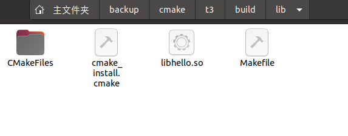
@Gavin注：在Windows的Cygwin环境下，该共享库为
cyghello.dll。
如果你需要指定 libhello.so 生成的位置，可以通过在主工程文件 CMakeLists.txt 中修改 ADD_SUBDIRECTORY(lib) 指令来指定一个编译输出位置或者在 lib/CMakeLists.txt 中添加 SET(LIBRARY_OUTPUT_PATH <路径>) 来指定一个新的位置。
这两者的区别我们上一节已经提到了，所以，这里不再赘述。下面，我们解释一下一个新的指令 ADD_LIBRARY ：
ADD_LIBRARY(libname [SHARED|STATIC|MODULE]
[EXCLUDE_FROM_ALL]
source1 source2 ... sourceN
)
你不需要写全 libhello.so，只需要填写 hello 即可，cmake 系统会自动为你生成 libhello.X。
类型有三种：
- SHARED，动态库
- STATIC，静态库
- MODULE，在使用 dyld 的系统有效，如果不支持 dyld，则被当作 SHARED 对待。
EXCLUDE_FROM_ALL 参数的意思是这个库不会被默认构建，除非有其他的组件依赖或者手工构建。
4. 添加静态库
同样使用上面的指令，我们在支持动态库的基础上再为工程添加一个静态库。按照一般的习惯，静态库名字跟动态库名字应该是一致的，只不过后缀是.a 罢了。
下面我们用这个指令再来添加静态库，在 t3/lib 的 CMakeLists.txt 文件中添加如下指令：
ADD_LIBRARY(hello STATIC ${LIBHELLO_SRC})
然后再在 build 目录进行外部编译。我们会发现，静态库根本没有被构建，仍然只生成了一个动态库。因为 hello 作为一个 target 是不能重名的，所以，静态库构建指令无效。
如果我们把上面的 hello 修改为 hello_static：
ADD_LIBRARY(hello_static STATIC ${LIBHELLO_SRC})
就可以构建一个 libhello_static.a 的静态库了。
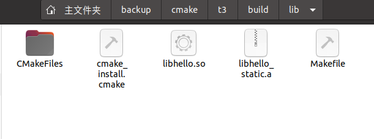
这种结果显示不是我们想要的，我们需要的是名字相同的静态库和动态库，因为 target 名称是唯一的。所以，我们肯定不能通过 ADD_LIBRARY 指令来实现了。这时候我们需要用到另外一个指令：
SET_TARGET_PROPERTIES，其基本语法是：
SET_TARGET_PROPERTIES(target1 target2 ...
PROPERTIES prop1 value1
prop2 value2 ...
)
这条指令可以用来设置输出的名称，对于动态库，还可以用来指定动态库版本和 API 版本。
在本例中，我们需要做的是向 lib/CMakeLists.txt 中添加一条：
SET_TARGET_PROPERTIES(hello_static PROPERTIES OUTPUT_NAME "hello")
这样，我们就可以同时得到 libhello.so/libhello.a 两个库了。
与它对应的指令是：
GET_TARGET_PROPERTY(VAR target property)
具体用法如下例，我们向 lib/CMakeListst.txt 中添加：
GET_TARGET_PROPERTY(OUTPUT_VALUE hello_static OUTPUT_NAME)
MESSAGE(STATUS "This is the hello_static OUTPUT_NAME:" ${OUTPUT_VALUE})
如果没有这个属性定义，则返回 NOTFOUND。
让我们来检查一下最终的构建结果，我们发现，libhello.a 已经构建完成，位于 build/lib 目录中，但是 libhello.so 却消失了。这个问题的原因是：cmake 在构建一个新的 target 时，会尝试清理掉其他使用这个名字的库，因此，在构建 libhello.a 时，就会清理掉 libhello.so。
@ROSIt注: 实测
libhello.so并没有消失, 所使用版本 cmake version 3.16.3。
为了回避这个问题，比如再次使用 SET_TARGET_PROPERTIES 定义 CLEAN_DIRECT_OUTPUT 属性。
向 lib/CMakeLists.txt 中添加：
SET_TARGET_PROPERTIES(hello PROPERTIES CLEAN_DIRECT_OUTPUT 1)
SET_TARGET_PROPERTIES(hello_static PROPERTIES CLEAN_DIRECT_OUTPUT 1)
这时候，我们再次进行构建，会发现 build/lib 目录中同时生成了 libhello.so 和 libhello.a。
5. 动态库版本号
按照规则，动态库是应该包含一个版本号的，我们可以看一下系统的动态库，一般情况是：
libhello.so.1.2
libhello.so ->libhello.so.1
libhello.so.1->libhello.so.1.2
为了实现动态库版本号，我们仍然需要使用 SET_TARGET_PROPERTIES 指令。
具体使用方法如下：
SET_TARGET_PROPERTIES(hello PROPERTIES VERSION 1.2 SOVERSION 1)
VERSION 指代动态库版本，SOVERSION 指代 API 版本。
将上述指令加入 lib/CMakeLists.txt 中，重新构建看看结果。
在 build/lib 目录会生成：
libhello.so.1.2
libhello.so.1->libhello.so.1.2
libhello.so ->libhello.so.1
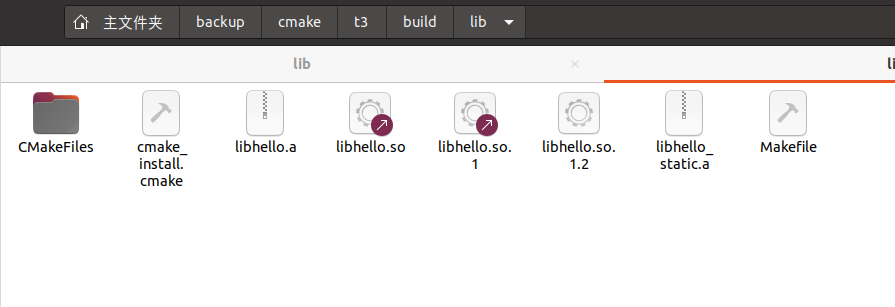
6. 安装共享库和头文件
以上面的例子，我们需要将 libhello.a, libhello.so.x 以及 hello.h 安装到系统目录，才能真正让其他人开发使用。在本例中我们将 hello 的共享库安装到 /lib 目录，将 hello.h 安装到 /include/hello 目录。
利用上一节了解到的 INSTALL 指令，我们向 lib/CMakeLists.txt 中添加如下指令：
INSTALL(TARGETS hello hello_static
LIBRARY DESTINATION lib
ARCHIVE DESTINATION lib
)
INSTALL(FILES hello.h DESTINATION include/hello)
注意，静态库要使用 ARCHIVE 关键字。
通过：
make
sudo make install
我们就可以将头文件和共享库安装到系统目录 /usr/lib 和 /usr/include/hello 中了。
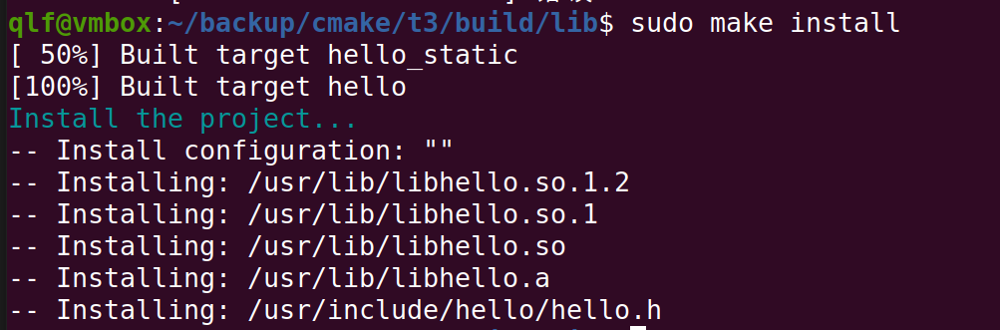
@Gavin注：在Mac中，请安装到
/usr/local/lib目录下。
7. 小结
本小节，我们谈到了：
- 如何通过
ADD_LIBRARY指令构建动态库和静态库。 - 如何通过
SET_TARGET_PROPERTIES同时构建同名的动态库和静态库。 - 如何通过
SET_TARGET_PROPERTIES控制动态库版本。 - 最终使用上一节谈到的
INSTALL 指令来安装头文件和动态、静态库。
在下一节，我们需要编写另一个高级一点的 Hello World 来演示怎么使用我们已经构建的共享库 libhello 和外部头文件。
六、如何使用外部共享库和头文件
抱歉，本节仍然继续折腾 Hello World。
上一节我们已经完成了 libhello 动态库的构建以及安装，本节我们的任务很简单：
- 编写一个程序使用我们上一节构建的共享库。
1. 准备工作
请在 /backup/cmake 目录建立 t4 目录，本节所有资源将存储在 t4 目录。
2. 重复以前的步骤，建立src目录，编写源文件 main.c，内容如下：
#include <hello.h>
int main(void)
{
HelloFunc();
return 0;
}
编写 t4 工程主文件 CMakeLists.txt：
PROJECT(HELLO)
ADD_SUBDIRECTORY(src)
编写 src/CMakeLists.txt：
ADD_EXECUTABLE(main main.c)
上述工作已经严格按照我们前面几节提到的内容完成了。
3. 外部构建
按照习惯，仍然建立 build 目录，使用 cmake .. 方式构建。
构建过程：
cmake ..
make
构建失败，如果需要查看细节，可以使用第一节提到的方法：make VERBOSE=1 来构建。
错误输出为是：
/home/qlf/backup/cmake/t4/src/main.c:1:10: fatal error: hello.h: 没有那个文件或目录
1 | #include <hello.h>
| ^~~~~~~~~
compilation terminated.
4. 引入头文件搜索路径
hello.h 位于 /usr/include/hello 目录中，并没有位于系统标准的头文件路径，(有人会说了，白痴啊，你就不会 include 。 同志，要这么干，我这 一节就没什么可写了，只能选择一个 glib 或者 libX11 来写了，这些代码写出来很多同志是看不懂的)。
为了让我们的工程能够找到 hello.h 头文件，我们需要引入一个新的指令
INCLUDE_DIRECTORIES，其完整语法为：
INCLUDE_DIRECTORIES([AFTER|BEFORE] [SYSTEM] dir1 dir2 ...)
这条指令可以用来向工程添加多个特定的头文件搜索路径，路径之间用空格分割，如果路径中包含了空格，可以使用双引号将它括起来。默认的行为是追加到当前的头文件搜索路径的后面，你可以通过两种方式来控制搜索路径添加的方式：
CMAKE_INCLUDE_DIRECTORIES_BEFORE，通过 SET 这个 cmake 变量为 on，可以将添加的头文件搜索路径放在已有路径的前面。- 通过
AFTER或者BEFORE参数，也可以控制是追加还是置前。
现在我们在 src/CMakeLists.txt 中添加一个头文件搜索路径，方式很简单，加入：
INCLUDE_DIRECTORIES(/usr/include/hello)
进入 build 目录，重新进行构建，这时找不到 hello.h 的错误已经消失，但是出现了一个新的错误：
main.c:(.text+0xe): undefined reference to `HelloFunc'
因为我们并没有 link 到共享库 libhello 上。
5. 为 target 添加共享库
我们现在需要完成的任务是将目标文件链接到 libhello，这里我们需要引入两个新的指令：LINK_DIRECTORIES 和 TARGET_LINK_LIBRARIES。
LINK_DIRECTORIES 的全部语法是：
LINK_DIRECTORIES(directory1 directory2 ...)
这个指令非常简单，添加非标准的共享库搜索路径。比如，在工程内部同时存在共享库和可执行二进制，在编译时就需要指定一下这些共享库的路径。这个例子中我们没有用到这个指令。
TARGET_LINK_LIBRARIES 的全部语法是：
TARGET_LINK_LIBRARIES(target library1
<debug | optimized> library2
...)
这个指令可以用来为 target 添加需要链接的共享库。本例中是一个可执行文件，但是同样可以用于为自己编写的共享库添加共享库链接。
@ROSIt注:TARGET_LINK_LIBRARIES是一条重要指令，ROS中也会用到
为了解决前面我们遇到的 HelloFunc 未定义错误，我们需要做的是向 src/CMakeLists.txt 中添加如下指令：
TARGET_LINK_LIBRARIES(main hello)
也可以写成：
TARGET_LINK_LIBRARIES(main libhello.so)
这里的 hello 指的是我们上一节构建的共享库 libhello。
进入 build 目录重新进行构建：
cmake ..
make
这时我们就得到了一个链接到 libhello 的可执行程序 main，位于 t4/build/src 目录。切换到 t4/build/src 目录，在终端执行./main，运行结果如下：
Hello World
让我们来检查一下 main 的链接情况。在 t4/build 目录中打开终端，执行ldd src/main，输出结果如下：
linux-vdso.so.1 (0x00007fff44f8f000)
libhello.so.1 => /lib/libhello.so.1 (0x00007f566802d000)
libc.so.6 => /lib/x86_64-linux-gnu/libc.so.6 (0x00007f5667e3b000)
/lib64/ld-linux-x86-64.so.2 (0x00007f5668075000)
可以清楚的看到 main 确实链接了共享库 libhello，而且链接的是动态库 libhello.so.1。
那如何链接到静态库呢？
方法很简单：
将 TARGET_LINK_LIBRRARIES 指令修改为：
TARGET_LINK_LIBRARIES(main libhello.a)
重新构建后再来看一下 main 的链接情况。在 t4/build 目录中打开终端，执行ldd src/main，输出结果如下：
linux-vdso.so.1 (0x00007ffdbb5e4000)
libc.so.6 => /lib/x86_64-linux-gnu/libc.so.6 (0x00007f86c713a000)
/lib64/ld-linux-x86-64.so.2 (0x00007f86c736f000)
说明，main 确实链接到了静态库 libhello.a。
6. 特殊的环境变量 CMAKE_INCLUDE_PATH 和 CMAKE_LIBRARY_PATH
务必注意，这两个是环境变量而不是 cmake 变量。
使用方法是要在 bash 中用 export 或者在 csh 中使用 set 命令设置或者 CMAKE_INCLUDE_PATH=/home/include cmake ..等方式。
这两个变量主要是用来解决以前 autotools 工程中 --extra-include-dir 等参数的支持的。
也就是，如果头文件没有存放在常规路径(/usr/include, /usr/local/include 等)，则可以通过这些变量就行弥补。
我们以本例中的 hello.h 为例，它存放在 /usr/include/hello 目录，所以直接查找肯定是找不到的。
前面我们直接使用了绝对路径 INCLUDE_DIRECTORIES(/usr/include/hello) 告诉工程这个头文件目录。
为了将程序更智能一点，我们可以使用 CMAKE_INCLUDE_PATH 来进行，使用 bash 的方法如下，在终端中输入：
export CMAKE_INCLUDE_PATH=/usr/include/hello
然后将 t4/src 目录 CMakeLists.txt 中的INCLUDE_DIRECTORIES(/usr/include/hello) 替换为：
FIND_PATH(myHeader hello.h)
IF(myHeader)
INCLUDE_DIRECTORIES(${myHeader})
ENDIF(myHeader)
上述的一些指令我们在后面会介绍。
这里简单说明一下，FIND_PATH 用来在指定路径中搜索文件名，比如:
FIND_PATH(myHeader NAMES hello.h PATHS /usr/include /usr/include/hello)
这里我们没有指定路径。但是，cmake 仍然可以帮我们找到 hello.h 存放的路径，就是因为我们设置了环境变量 CMAKE_INCLUDE_PATH。
如果你不使用 FIND_PATH，CMAKE_INCLUDE_PATH 变量的设置是没有作用的，你不能指望它会直接为编译器命令添加参数 -I<CMAKE_INCLUDE_PATH>。
以此为例，CMAKE_LIBRARY_PATH 可以用在 FIND_LIBRARY 中。
同样，因为这些变量直接为 FIND 指令所使用，所以所有使用 FIND_ 指令的 cmake 模块都会受益。
7. 小结
本节我们探讨了：
- 如何通过 INCLUDE_DIRECTORIES 指令加入非标准的头文件搜索路径。
- 如何通过 LINK_DIRECTORIES 指令加入非标准的库文件搜索路径。
- 如果通过 TARGET_LINK_LIBRARIES 为库或可执行二进制加入库链接。
- 并解释了如何链接到静态库。
到这里为止，您应该基本可以使用 cmake 工作了，但是还有很多高级的话题没有探讨，比如编译条件检查、编译器定义、平台判断、如何跟 pkgconfig 配合使用等等。
到这里，或许你可以理解前面讲到的“cmake 的使用过程其实就是学习 cmake 语言并编写 cmake 程序的过程”，既然是“cmake 语言”，自然涉及到变量、语法等。
下一节，我们将抛开程序的话题，看看常用的 CMAKE 变量以及一些基本的控制语法规则。
七、cmake 常用变量和常用环境变量
1. cmake 变量引用的方式
前面我们已经提到了，使用${}进行变量的引用。在 IF 等语句中，是直接使用变量名而不通过${}取值。
2. cmake 自定义变量的方式
主要有隐式定义和显式定义两种，前面举了一个隐式定义的例子，就是 PROJECT 指令，他会隐式的定义<projectname>_BINARY_DIR 和<projectname>_SOURCE_DIR两个变量。
显式定义的例子我们前面也提到了，使用 SET 指令，就可以构建一个自定义变量了。
比如：
SET(HELLO_SRC main.c)，PROJECT_BINARY_DIR 可以通过 ${HELLO_SRC} 来引用这个自定义变量了。
3. cmake常用变量
CMAKE_BINARY_DIRPROJECT_BINARY_DIR<projectname>_BINARY_DIR这三个变量指代的内容是一致的，如果是 in source 编译，指得就是工程顶层目录；如果是 out-of-source 编译，指的是工程编译发生的目录。PROJECT_BINARY_DIR 跟其他指令稍有区别，现在，你可以理解为他们是一致的。
CMAKE_SOURCE_DIRPROJECT_SOURCE_DIR<projectname>_SOURCE_DIR这三个变量指代的内容是一致的，不论采用何种编译方式，都是工程顶层目录。
也就是在 in source 编译时，他跟 CMAKE_BINARY_DIR 等变量一致。
PROJECT_SOURCE_DIR 跟其他指令稍有区别，现在，你可以理解为他们是一致的。
CMAKE_CURRENT_SOURCE_DIR指的是当前处理的 CMakeLists.txt 所在的路径，比如上面我们提到的 src 子目录。
CMAKE_CURRRENT_BINARY_DIR如果是 in-source 编译，它跟 CMAKE_CURRENT_SOURCE_DIR 一致；如果是 out-ofsource 编译，他指的是 target 编译目录。
使用我们上面提到的
ADD_SUBDIRECTORY(src bin)可以更改这个变量的值。使用
SET(EXECUTABLE_OUTPUT_PATH <新路径>)并不会对这个变量造成影响，它仅仅修改了最终目标文件存放的路径。CMAKE_CURRENT_LIST_FILE输出调用这个变量的 CMakeLists.txt 的完整路径
CMAKE_CURRENT_LIST_LINE输出这个变量所在的行
CMAKE_MODULE_PATH这个变量用来定义自己的 cmake 模块所在的路径。如果你的工程比较复杂，有可能会自己编写一些 cmake 模块，这些 cmake 模块是随你的工程发布的。为了让 cmake 在处理 CMakeLists.txt 时找到这些模块，你需要通过 SET 指令，将自己的 cmake 模块路径设置一下。
比如：
SET(CMAKE_MODULE_PATH ${PROJECT_SOURCE_DIR}/cmake)这时候你就可以通过 INCLUDE 指令来调用自己的模块了。
EXECUTABLE_OUTPUT_PATH和LIBRARY_OUTPUT_PATH分别用来重新定义最终结果的存放目录，前面我们已经提到了这两个变量。
PROJECT_NAME返回通过 PROJECT 指令定义的项目名称。
4. cmake 调用环境变量的方式
使用$ENV{NAME} 指令就可以调用系统的环境变量了。
设置环境变量的方式是：
SET(ENV{变量名} 值)
CMAKE_INCLUDE_CURRENT_DIR自动添加 CMAKE_CURRENT_BINARY_DIR 和 CMAKE_CURRENT_SOURCE_DIR 到当前处理的 CMakeLists.txt。相当于在每个 CMakeLists.txt 加入：
INCLUDE_DIRECTORIES(${CMAKE_CURRENT_BINARY_DIR} ${CMAKE_CURRENT_SOURCE_DIR})CMAKE_INCLUDE_DIRECTORIES_PROJECT_BEFORE将工程提供的头文件目录始终置于系统头文件目录的前面，当你定义的头文件确实跟系统发生冲突时可以提供一些帮助。
CMAKE_INCLUDE_PATH 和 CMAKE_LIBRARY_PATH 我们在上一节已经提及。
5. 系统信息
- CMAKE_MAJOR_VERSION，CMAKE 主版本号，比如 2.4.6 中的 2
- CMAKE_MINOR_VERSION，CMAKE 次版本号，比如 2.4.6 中的 4
- CMAKE_PATCH_VERSION，CMAKE 补丁等级，比如 2.4.6 中的 6
- CMAKE_SYSTEM，系统名称，比如 Linux-2.6.22
- CMAKE_SYSTEM_NAME，不包含版本的系统名，比如 Linux
- CMAKE_SYSTEM_VERSION，系统版本，比如 2.6.22
- CMAKE_SYSTEM_PROCESSOR，处理器名称，比如 i686
- UNIX，在所有的类 UNIX 平台为 TRUE，包括 OS X 和 cygwin
- WIN32，在所有的 win32 平台为 TRUE，包括 cygwin
6. 主要的开关选项
MAKE_ALLOW_LOOSE_LOOP_CONSTRUCTS，用来控制IF ELSE语句的书写方式，在下一节语法部分会讲到。BUILD_SHARED_LIBS这个开关用来控制默认的库编译方式，如果不进行设置，使用 ADD_LIBRARY 并没有指定库类型的情况下，默认编译生成的库都是静态库。
CMAKE_C_FLAGS设置C编译选项，也可以通过指令
ADD_DEFINITIONS()添加。CMAKE_CXX_FLAGS设置C++编译选项，也可以通过指令
ADD_DEFINITIONS()添加。
7.小结
本章介绍了一些较常用的 cmake 变量，这些变量仅仅是所有 cmake 变量的很少一部分。目前 cmake 的英文文档也是比较缺乏的，如果需要了解更多的 cmake 变量，更好的方式是阅读一些成功项目的 cmake 工程文件，比如 KDE4 的代码。
八、cmkae 常用指令
前面我们讲到了 cmake 常用的变量，相信“cmake 即编程”的感觉会越来越明显。无论如何，我们仍然可以看到 cmake 比 autotools 要简单很多。接下来我们就要集中的看一看 cmake 所提供的常用指令。在前面的章节我们已经讨论了很多指令的用法，如 PROJECT，ADD_EXECUTABLE，INSTALL，ADD_SUBDIRECTORY，SUBDIRS，INCLUDE_DIRECTORIES，LINK_DIRECTORIES，TARGET_LINK_LIBRARIES，SET等。
1. 基本指令
ADD_DEFINITIONS向C，C++编译器添加
-D定义，比如：ADD_DEFINITIONS(-DENABLE_DEBUG -DABC)，参数之间用空格分割。如果你的代码中定义了
#ifdef ENABLE_DEBUG #endif，这个代码块就会生效。如果要添加其他的编译器开关，可以通过 CMAKE_C_FLAGS 变量和 CMAKE_CXX_FLAGS 变量设置。
ADD_DEPENDENCIES定义 target 依赖的其他 target，确保在编译本 target 之前，其他的 target 已经被构建。
ADD_DEPENDENCIES(target-name depend-target1 depend-target2 ...)ADD_EXECUTABLE、ADD_LIBRARY、ADD_SUBDIRECTORY前面已经介绍过了，这里不再罗唆。ADD_TEST与ENABLE_TESTING指令ENABLE_TESTING指令用来控制 Makefile 是否构建 test 目标，涉及工程所有目录。语法很简单，没有任何参数，ENABLE_TESTING()，一般情况这个指令放在工程的主CMakeLists.txt 中。ADD_TEST指令的语法是：ADD_TEST(testname Exename arg1 arg2 ...)testname 是自定义的 test 名称，Exename 可以是构建的目标文件也可以是外部脚本等等。后面连接传递给可执行文件的参数。如果没有在同一个 CMakeLists.txt 中打开ENABLE_TESTING()指令，任何 ADD_TEST 都是无效的。
比如我们前面的 Helloworld 例子，可以在工程主 CMakeLists.txt 中添加
ADD_TEST(mytest ${PROJECT_BINARY_DIR}/bin/main) ENABLE_TESTING()生成 Makefil e后，就可以运行
make test来执行测试了。AUX_SOURCE_DIRECTORY基本语法是：
AUX_SOURCE_DIRECTORY(dir VARIABLE)作用是发现一个目录下所有的源代码文件并将列表存储在一个变量中，这个指令临时被用来自动构建源文件列表。因为目前 cmake 还不能自动发现新添加的源文件。
比如：
AUX_SOURCE_DIRECTORY(. SRC_LIST) ADD_EXECUTABLE(main ${SRC_LIST})你也可以通过后面提到的 FOREACH 指令来处理这个 LIST。
CMAKE_MINIMUM_REQUIRED其语法为
CMAKE_MINIMUM_REQUIRED(VERSION versionNumber [FATAL_ERROR])比如
CMAKE_MINIMUM_REQUIRED(VERSION 2.5 FATAL_ERROR)如果 cmake 版本小与 2.5，则出现严重错误，整个过程中止。
EXEC_PROGRAM在 CMakeLists.txt 处理过程中执行命令，并不会在生成的 Makefile 中执行。具体语法为:
EXEC_PROGRAM(Executable [directory in which to run] [ARGS <arguments to executable>] [OUTPUT_VARIABLE <var>] [RETURN_VALUE <var>])用于在指定的目录运行某个程序，通过 ARGS 添加参数。如果要获取输出和返回值，可通过 OUTPUT_VARIABLE 和 RETURN_VALUE 分别定义两个变量。
这个指令可以帮助你在 CMakeLists.txt 处理过程中支持任何命令，比如根据系统情况去 修改代码文件等等。
举个简单的例子，我们要在 src 目录执行 ls 命令，并把结果和返回值存下来。
可以直接在 src/CMakeLists.txt 中添加：
EXEC_PROGRAM(ls ARGS "*.c" OUTPUT_VARIABLE LS_OUTPUT RETURN_VALUE LS_RVALUE) IF(not LS_RVALUE) MESSAGE(STATUS "ls result: " ${LS_OUTPUT}) ENDIF(not LS_RVALUE)在cmake 生成 Makefile 的过程中，就会执行 `ls`` 命令，如果返回0，则说明成功执行，那么就输出ls *.c的结果。关于IF语句，后面的控制指令会提到。
FILE指令文件操作指令，基本语法为：
FILE(WRITE filename "message to write"... ) FILE(APPEND filename "message to write"... ) FILE(READ filename variable) FILE(GLOB variable [RELATIVE path] [globbing expressions]...) FILE(GLOB_RECURSE variable [RELATIVE path] [globbing expressions]...) FILE(REMOVE [directory]...) FILE(REMOVE_RECURSE [directory]...) FILE(MAKE_DIRECTORY [directory]...) FILE(RELATIVE_PATH variable directory file) FILE(TO_CMAKE_PATH path result) FILE(TO_NATIVE_PATH path result)这里的语法都比较简单，不在展开介绍了。
INCLUDE指令，用来载入 CMakeLists.txt 文件，也用于载入预定义的 cmake 模块INCLUDE(file1 [OPTIONAL])INCLUDE(module [OPTIONAL])OPTIONAL 参数的作用是文件不存在也不会产生错误。
你可以指定载入一个文件，如果定义的是一个模块，那么将在 CMAKE_MODULE_PATH 中搜 索这个模块并入。
载入的内容将在处理到 INCLUDE 语句是直接执行。
2. INSTALL 指令
INSTALL 系列指令已经在前面的章节有非常详细的说明，这里不在赘述，可参考前面的安装部分。
3. FIND指令
FIND_ 系列指令主要包含一下指令：
FIND_FILE(<VAR> name1 path1 path2 ...)
VAR 变量代表找到的文件全路径，包含文件名
FIND_LIBRARY(<VAR> name1 path1 path2 ...)
VAR 变量表示找到的库全路径，包含库文件名
FIND_PATH(<VAR> name1 path1 path2 ...)
VAR 变量代表包含这个文件的路径。
FIND_PROGRAM(<VAR> name1 path1 path2 ...)
VAR 变量代表包含这个程序的全路径。
FIND_PACKAGE(<name> [major.minor] [QUIET] [NO_MODULE]
[[REQUIRED|COMPONENTS] [componets...]])
用来调用预定义在 CMAKE_MODULE_PATH 下的 Find<name>.cmake 模块，你也可以自己 定义Find<name>模块，通过SET(CMAKE_MODULE_PATH dir)将其放入工程的某个目录 中供工程使用。我们在后面的章节会详细介绍FIND_PACKAGE 的使用方法和 Find 模块的编写。
FIND_LIBRARY 示例：
FIND_LIBRARY(libX X11 /usr/lib)
IF(NOT libX)
MESSAGE(FATAL_ERROR “libX not found”)
ENDIF(NOT libX)
4. 控制指令
IF指令基本语法为：
IF(expression) # THEN section. COMMAND1(ARGS ...) COMMAND2(ARGS ...) ... ELSE(expression) # ELSE section. COMMAND1(ARGS ...) COMMAND2(ARGS ...) ... ENDIF(expression)另外一个指令是
ELSEIF，总体把握一个原则，凡是出现IF的地方一定要有对应的ENDIF。出现 ELSEIF 的地方，ENDIF是可选的。表达式的使用方法如下：
IF(var)，如果变量不是：空，0，N, NO, OFF, FALSE, NOTFOUND 或<var>_NOTFOUND时，表达式为真。IF(NOT var )，与上述条件相反。IF(var1 AND var2)，当两个变量都为真是为真。IF(var1 OR var2)，当两个变量其中一个为真时为真。IF(COMMAND cmd)，当给定的 cmd 确实是命令并可以调用时为真。IF(EXISTS dir)或者IF(EXISTS file)，当目录名或者文件名存在时为真。IF(file1 IS_NEWER_THAN file2)，当 file1 比 file2 新，或者 file1/file2 其 中有一个不存在时为真，文件名请使用完整路径。IF(IS_DIRECTORY dirname)，当 dirname 是目录时，为真。IF(variable MATCHES regex) IF(string MATCHES regex)当给定的变量或者字符串能够匹配正则表达式 regex 时为真。比如：
IF("hello" MATCHES "ell") MESSAGE("true") ENDIF("hello" MATCHES "ell")# 数字比较表达式 IF(variable LESS number) IF(string LESS number) IF(variable GREATER number) IF(string GREATER number) IF(variable EQUAL number) IF(string EQUAL number)# 按照字母序的排列进行比较 IF(variable STRLESS string) IF(string STRLESS string) IF(variable STRGREATER string) IF(string STRGREATER string) IF(variable STREQUAL string) IF(string STREQUAL string)IF(DEFINED variable)，如果变量被定义，为真。一个小例子，用来判断平台差异：
IF(WIN32) MESSAGE(STATUS “This is windows.”) # 做一些 Windows 相关的操作 ELSE(WIN32) MESSAGE(STATUS “This is not windows”) # 做一些非 Windows 相关的操作 ENDIF(WIN32)上述代码用来控制在不同的平台进行不同的控制，但是，阅读起来却并不是那么舒服，ELSE(WIN32)之类的语句很容易引起歧义。
这就用到了我们在“常用变量”一节提到的
CMAKE_ALLOW_LOOSE_LOOP_CONSTRUCTS开关。可以
SET(CMAKE_ALLOW_LOOSE_LOOP_CONSTRUCTS ON)这时候就可以写成：
IF(WIN32) ELSE() ENDIF()如果配合
ELSEIF使用，可能的写法是这样：IF(WIN32) #do something related to WIN32 ELSEIF(UNIX) #do something related to UNIX ELSEIF(APPLE) #do something related to APPLE ENDIF(WIN32)WHILEWHILE 指令的语法是：
WHILE(condition) COMMAND1(ARGS ...) COMMAND2(ARGS ...) ... ENDWHILE(condition)其真假判断条件可以参考 IF 指令。
FOREACHFOREACH 指令的使用方法有三种形式：
列表
FOREACH(loop_var arg1 arg2 ...) COMMAND1(ARGS ...) COMMAND2(ARGS ...) ... ENDFOREACH(loop_var)像我们前面使用的
AUX_SOURCE_DIRECTORY的例子AUX_SOURCE_DIRECTORY(. SRC_LIST) FOREACH(F ${SRC_LIST}) MESSAGE(${F}) ENDFOREACH(F)范围
FOREACH(loop_var RANGE total) ENDFOREACH(loop_var)从 0 到 total 以 1 为步进。
举例如下：
FOREACH(VAR RANGE 10) MESSAGE(${VAR}) ENDFOREACH(VAR)得到的结果是：
0 1 2 3 4 5 6 7 8 9 10范围和步进
FOREACH(loop_var RANGE start stop [step]) ENDFOREACH(loop_var)从 start 开始到 stop 结束，以 step 为步进， 举例如下：
FOREACH(A RANGE 5 15 3) MESSAGE(${A}) ENDFOREACH(A)最终得到的结果是:
5 8 11 14这个指令需要注意的是，直到遇到 ENDFOREACH 指令，整个语句块才会得到真正的执行。
5.小结
本小节基本涵盖了常用的 cmake 指令，包括基本指令、查找指令、安装指令以及控制语句等。特别需要注意的是，在控制语句条件中使用变量，不能用${}引用，而是直接应用变量名。
掌握了以上的各种控制指令，你应该完全可以通过 cmake 管理复杂的程序了。下一节，我们将介绍一个比较复杂的例子，通过他来演示本章的一些指令，并介绍模块的概念。
九、复杂的例子：模块的使用和自定义
你现在还会觉得 cmake 简单吗？
本章我们将着重介绍系统预定义的 Find 模块的使用以及自己编写 Find 模块。系统中提供了其他各种模块，一般情况需要使用 INCLUDE 指令显式的调用，FIND_PACKAGE 指令是一个特例，可以直接调用预定义的模块。
其实使用纯粹依靠 cmake 本身提供的基本指令来管理工程是一件非常复杂的事情。所以，cmake 设计成了可扩展的架构，可以通过编写一些通用的模块来扩展 cmake。
在本章，我们准备首先介绍一下 cmake 提供的 FindCURL 模块的使用。然后，基于我们前面的 libhello 共享库，编写一个 FindHello.cmake 模块。
1. 使用 FindCURL 模块
在 /backup/cmake 目录建立 t5 目录，用于存放我们的 CURL 的例子。
建立 src 目录，并建立 src/main.c，内容如下：
#include <curl/curl.h>
#include <stdio.h>
#include <stdlib.h>
#include <unistd.h>
FILE *fp;
int write_data(void *ptr, size_t size, size_t nmemb, void *stream)
{
int written = fwrite(ptr, size, nmemb, (FILE *)fp);
return written;
}
int main()
{
const char * path = "/tmp/curl-test";
const char * mode = "w";
fp = fopen(path, mode);
curl_global_init(CURL_GLOBAL_ALL);
CURLcode res;
CURL *curl = curl_easy_init();
curl_easy_setopt(curl, CURLOPT_URL, "https://www.baidu.com");
curl_easy_setopt(curl, CURLOPT_WRITEFUNCTION, write_data);
curl_easy_setopt(curl, CURLOPT_VERBOSE, 1);
res = curl_easy_perform(curl);
curl_easy_cleanup(curl);
}
这段代码的作用是通过 curl 取回 www.linux-ren.org 的首页并写入 /tmp/curl-test 文件中。
@Gavin注：原书中的 www.linux-ren.org 会产生301重定向，建议换成其他，比如：https://www.baidu.com
建立 t5 主工程文件 CMakeLists.txt：
PROJECT(CURLTEST)
ADD_SUBDIRECTORY(src)
建立 src/CMakeLists.txt：
ADD_EXECUTABLE(curltest main.c)
现在自然是没办法编译的，我们需要添加 curl 的头文件路径和库文件。
方法 1：
直接通过 INCLUDE_DIRECTORIES 和 TARGET_LINK_LIBRARIES 指令添加
我们可以直接在 src/CMakeLists.txt 中添加：
INCLUDE_DIRECTORIES(/usr/include)
TARGET_LINK_LIBRARIES(curltest curl)
方法2：
我们要探讨的是使用 cmake 提供的 FindCURL 模块。
向 src/CMakeLists.txt 中添加：
FIND_PACKAGE(CURL)
IF(CURL_FOUND)
INCLUDE_DIRECTORIES(${CURL_INCLUDE_DIR})
TARGET_LINK_LIBRARIES(curltest ${CURL_LIBRARY})
ELSE(CURL_FOUND)
MESSAGE(FATAL_ERROR ”CURL library not found”)
ENDIF(CURL_FOUND)
对于系统预定义的 Find<name>.cmake 模块，使用方法一般如上例所示：
每一个模块都会定义以下几个变量：
<name>_FOUND<name>_INCLUDE_DIRor<name>_INCLUDES<name>_LIBRARYor<name>_LIBRARIES
你可以通过<name>_FOUND来判断模块是否被找到，如果没有找到，按照工程的需要关闭某些特性、给出提醒或者中止编译，上面的例子就是报出致命错误并终止构建。
如果 <name>_FOUND 为真，则将 <name>_INCLUDE_DIR 加入 INCLUDE_DIRECTORIES， 将 <name>_LIBRARY 加入 TARGET_LINK_LIBRARIES 中。
方法1或者方法2操作完成后，建立 build目录，进行外部构建，在终端中输入：
cmake ..
make
即可在 /build/src 目录下得到可执行文件 curltest
我们再来看一个复杂的例子，通过 <name>_FOUND 来控制工程特性：
SET(mySources viewer.c)
SET(optionalSources)
SET(optionalLibs)
FIND_PACKAGE(JPEG)
IF(JPEG_FOUND)
SET(optionalSources ${optionalSources} jpegview.c)
INCLUDE_DIRECTORIES( ${JPEG_INCLUDE_DIR} )
SET(optionalLibs ${optionalLibs} ${JPEG_LIBRARIES} )
ADD_DEFINITIONS(-DENABLE_JPEG_SUPPORT)
ENDIF(JPEG_FOUND)
IF(PNG_FOUND)
SET(optionalSources ${optionalSources} pngview.c)
INCLUDE_DIRECTORIES( ${PNG_INCLUDE_DIR} )
SET(optionalLibs ${optionalLibs} ${PNG_LIBRARIES} )
ADD_DEFINITIONS(-DENABLE_PNG_SUPPORT)
ENDIF(PNG_FOUND)
ADD_EXECUTABLE(viewer ${mySources} ${optionalSources} ) TARGET_LINK_LIBRARIES(viewer ${optionalLibs}
通过判断系统是否提供了 JPEG 库来决定程序是否支持 JPEG 功能。
2. 编写属于自己的 FindHello 模块
@ROSIT注: 代码未测试成功
我们在此前的 t3 实例中，演示了构建动态库、静态库的过程并进行了安装。
接下来，我们在 t6 示例中演示如何自定义 FindHELLO 模块并使用这个模块构建工程：
在 /backup/cmake/ 中建立 t6 目录，并在其中建立 cmake目录用于存放我们自己定义的 FindHELLO.cmake 模块。同时建立 src 目录，用于存放我们的源文件。
- 进入到 t6/cmake目录，新建
FindHELLO.cmake文件，并填写如下内容：
FIND_PATH(HELLO_INCLUDE_DIR hello.h /usr/include/hello /usr/local/include/hello)
FIND_LIBRARY(HELLO_LIBRARY NAMES hello PATH /usr/lib /usr/local/lib)
IF(HELLO_INCLUDE_DIR AND HELLO_LIBRARY)
SET(HELLO_FOUND TRUE)
ENDIF(HELLO_INCLUDE_DIR AND HELLO_LIBRARY)
IF(HELLO_FOUND)
IF(NOT HELLO_FIND_QUIETLY)
MESSAGE(STATUS "Found Hello: ${HELLO_LIBRARY}")
ENDIF(NOT HELLO_FIND_QUIETLY)
ELSE(HELLO_FOUND)
IF(HELLO_FIND_REQUIRED)
MESSAGE(FATAL_ERROR "Could not find hello library")
ENDIF(HELLO_FIND_REQUIRED)
ENDIF(HELLO_FOUND)
针对上面的模块让我们再来回顾一下 FIND_PACKAGE 指令：
FIND_PACKAGE(<name> [major.minor] [QUIET] [NO_MODULE]
[[REQUIRED|COMPONENTS] [componets...]])
前面的 CURL 例子中我们使用了最简单的 FIND_PACKAGE 指令。其实他可以使用多种参数：QUIET参数，对应与我们编写的 FindHELLO 中的 HELLO_FIND_QUIETLY，如果不指定这个参数，就会执行：
MESSAGE(STATUS "Found Hello: ${HELLO_LIBRARY}")
REQUIRED 参数，其含义是指这个共享库是否是工程必须的。如果使用了这个参数，说明这个链接库是必备库，如果找不到这个链接库，则工程不能编译。对应于FindHELLO.cmake模块中的 HELLO_FIND_REQUIRED 变量。
同样，我们在上面的模块中定义了 HELLO_FOUND, HELLO_INCLUDE_DIR, HELLO_LIBRARY 变量供开发者在FIND_PACKAGE 指令中使用。
OK，下面建立 src/main.c，内容为：
#include <hello.h>
int main()
{
HelloFunc();
return 0;
}
建立 src/CMakeLists.txt 文件，内容如下：
FIND_PACKAGE(HELLO)
IF(HELLO_FOUND)
ADD_EXECUTABLE(hello main.c)
INCLUDE_DIRECTORIES(${HELLO_INCLUDE_DIR})
TARGET_LINK_LIBRARIES(hello ${HELLO_LIBRARY})
ENDIF(HELLO_FOUND)
为了能够让工程找到 FindHELLO.cmake 模块(存放在工程中的 cmake 目录)，我们在 t6 主工程文件 CMakeLists.txt 中加入：
SET(CMAKE_MODULE_PATH ${PROJECT_SOURCE_DIR}/cmake)
3. 使用自定义的 FindHELLO 模块构建工程
仍然采用外部编译的方式，建立 build 目录，进入目录运行：
cmake ..
我们可以从输出中看到：
Found Hello: /usr/lib/libhello.so
如果我们把上面的FIND_PACKAGE(HELLO)修改为FIND_PACKAGE(HELLO QUIET)，则不会看到上面的输出。
接下来就可以使用 make 命令构建工程，运行：./src/hello 可以得到输出： Hello World。
说明工程成功构建。
4. 如果没有找到 hello library 呢?
我们可以尝试将 /usr/lib/libhello.x 移动到 /tmp 目录，这样，按照 FindHELLO 模块的定义，就找不到 hello library 了，我们再来看一下构建结果：
cmake ..
仍然可以成功进行构建，但是这时候是没有办法编译的。
修改FIND_PACKAGE(HELLO)为FIND_PACKAGE(HELLO REQUIRED)，将 hello library 定义为工程必须的共享库。
这时候再次运行cmake ..
我们得到如下输出：
CMake Error: Could not find hello library
因为找不到 libhello.x，所以，整个 Makefile 生成过程被出错中止。
5.小结
在本节中，我们学习了如何使用系统提供的 Find<NAME> 模块并学习了自己编写 Find<NAME> 模块以及如何在工程中使用这些模块。
后面的章节，我们会逐渐学习更多的 cmake 模块使用方法以及用 cmake 来管理 GTK 和 QT4 工程。
练习参考代码：链接：https://pan.baidu.com/s/14tSQq5ggZ4e1xCrCl_BUSw 提取码：6666